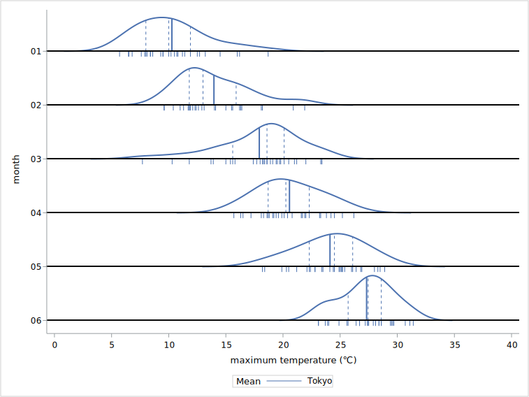
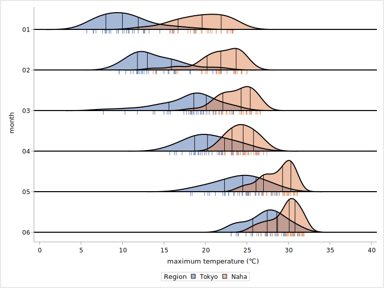

Ridgeline plot
What’s this?
Macro for generate ridgeline plot using SAS GRAPH.
Ridgeline plot shows the distribution of response variable each groups. the distribution is estimated by KDE (Kernel Density Estimation) using proc kde.
rugplot and several descriptive statistics (mean, q1, q2, q3) can be overlaid on the ridgeline plot.
Input data
key
variable
type
1
category
numeric or string
2
group response
numeric or string numeric
group variable is optional.
I recommended that the variable type of category and group are set to numeric with format. if the variable type is string, item order is defined as ascending character order.
Syntax
ods graphics / < graphics option > ;
ods listing gpath=< output path >;
%macro ridgeline(
data=,
x=,
y=,
group=None,
xlabel=x,
ylabel=y,
yticks=,
cat_iv = 1.2,
gridsize = 401,
bw_method = sjpi,
bw_adjust = 1,
quartile=False,
mean=False,
legend = False,
grouplegendtitle=group,
rug = False,
ruglength = 2,
fillstyle=None,
qgradient=1,
palette=sns);
Parameters
data : dataset name (required)
input data. keep, rename and where options are available.
x : variable name (required)
category variable
y : variable name (required)
response variable
group : variable name (optional)
group variable for grouping data at each category.
when the parameter is not set, all of outline color is set black.
when the parameter is set category variable, the graph object of each category is set different color.
default is “None”.
xlabel : string (optional)
label string of category axis. default is “Category”. when the label is not displayed , set like below.
xlabel=,
ylabel : string (optional)
optional. label string of response axis. default is “Response”. when the label is not displayed , set like below.
ylabel=,
yticks : numeric list (required)
tickvalue list of response axis. the list is set as the numeric list separated by space . the item of the list should be set ascending order.
ex. yticks = 10 20 30 40,
cat_iv : numeric (optional)
the interval of category. the default is 1.2. when this parameter is set below 1, each density may be overlapped.
gridsize : integer (optional)
the number of KDE grid size. default is 401 (the default of proc kde)
bw_method : keyword (optional)
the bandwidth estimation method of KDE. default is “sjpi” (the default of proc kde).
method keyword described below is available.
sjpi (Sheather-Jones plug-in)
snr (simple normal reference)
snrq (simple normal reference that uses the interquartile range)
srot (Silverman’s rule of thumb)
os (oversmoothed)
bw_adjust : numeric (optional)
the bandwidth multiplier. Increasing will make the curve smoother. the default is 1.
quartile : bool (optional)
if this parameter is set “True”, quartile lines will be displayed as dashed lines each density. the default is “False”.
mean : bool (optional)
if this parameter is set “True”, mean lines will be displayed as solid lines each density. the default is “False”.
rug : bool (optional)
if “True” the rugplot is displayed. the default is “False”
ruglength : numeric (optional)
the scale factor of the rugplot.when rug parameter is set “False”, this parameter will be ignored. the default is 1. if set larger value, the rugplot is prolonged.
legend : bool (optional)
if “True” the legend of group item is displayed. if group parameter is “None”, the parameter will be ignored. default is “False”.
grouplegendtitle : text (optional)
the title of group legend. if legend parameter is set “True”, this parameter will be ignored. default is “Group”.
fillstyle : keyword (optional)
the fill style of density plot. the style keyword described below is available. if group parameter is not set, this parameter can be set “None” only.
None: fill is not displayed.
Group: fill color of each density will be defined based on group parameter.
Quartile: fill color will be defined based on the quartiles of each x variable.
qgradient : 1 to 7 (optional)
the color gradient pattern of quartile. this parameter can be set gradient ID (1 to 7). default is “1”.
palette : keyword (optional)
color palette for fill, line and markers. the palettes described below is available. see color palette section of introduction page. default is “SNS” (Seaborn default palette).
SAS
SNS (Seaborn)
STATA
TABLEAU
example
simple ridgeline plot
datasets (tokyo_naha_temp)
variable
type
detail
month
numeric
Jan-Dec
region
numeric
1=Tokyo 2=Naha
max_temp
numeric
maximum daily temperature
code
ods graphics /reset=all height=15cm width=25cm imagename="ridgeline_simple" imagefmt=svg;
ods listing gpath="<output path>";
%ridgeline(
data=tokyo_naha_temp(where=(month in(1:6) and region=1)),
x=month,
y=max_temp,
xlabel=month,
ylabel=maximum temperature (℃),
yticks=0 5 10 15 20 25 30 35 40
);
output

grouped ridgeline plot
if group parameter is set, density outline color will be defined based by group and fill appearance will be available.
code
ods graphics /reset=all height=15cm width=25cm imagename="ridgeline_simple_grouped" imagefmt=svg;
ods listing gpath="<output path>";
%ridgeline(
data=tokyo_naha_temp(where=(month in(1:6))),
x=month,
y=max_temp,
group=region,
xlabel=month,
ylabel=maximum temperature (℃),
yticks=0 5 10 15 20 25 30 35 40,
grouplegendtitle=Region,
legend=true
);
output

ridgeline plot with statistics
this macro is supported displaying statistics, mean and quartile. Mean and quartile is displayed as line.
code
ods graphics /reset=all height=15cm width=25cm imagename="ridgeline_stat" imagefmt=svg;
ods listing gpath="<output path>";
%ridgeline(
data=tokyo_naha_temp(where=(month in(1:6) and region=1)),
x=month,
y=max_temp,
group=region,
xlabel=month,
ylabel=maximum temperature (℃),
yticks=0 5 10 15 20 25 30 35 40,
grouplegendtitle=Region,
legend=true,
mean=true,
quartile=true,
rug=true
);
output
fill style
This macro is supported three fill appearance, None, Group, and Quartile.
Group appearance and Quartile appearance is available when group parameter is set.
code
ods graphics /reset=all height=15cm width=20cm imagename="ridgeline_fill_group" imagefmt=svg;
ods listing gpath="<output path>";
%ridgeline(
data=tokyo_naha_temp(where=(month in(1:6))),
x=month,
y=max_temp,
group=region,
xlabel=month,
ylabel=maximum temperature (℃),
yticks=0 5 10 15 20 25 30 35 40,
grouplegendtitle=Region,
fillstyle=group,
legend=true,
mean=false,
quartile=true,
rug=true
);
output
code
ods graphics /reset=all height=15cm width=20cm imagename="ridgeline_fill_quartile" imagefmt=svg;
ods listing gpath="<output path>";
%ridgeline(
data=tokyo_naha_temp(where=(month in(1:6) and region=1)),
x=month,
y=max_temp,
group=region,
xlabel=month,
ylabel=maximum temperature (℃),
yticks=0 5 10 15 20 25 30 35 40,
grouplegendtitle=Region,
fillstyle=quartile,
legend=true,
mean=false,
quartile=true,
rug=true
);
quartile gradient style are as follows.